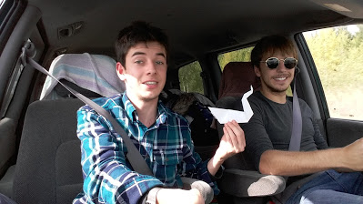
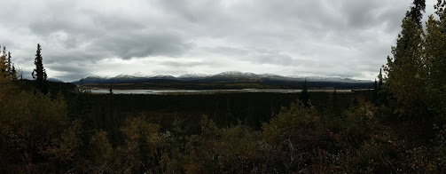
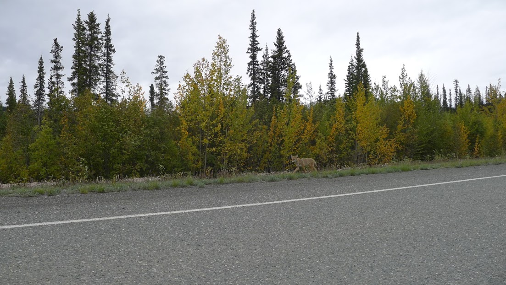
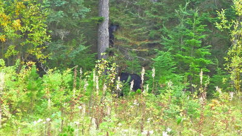
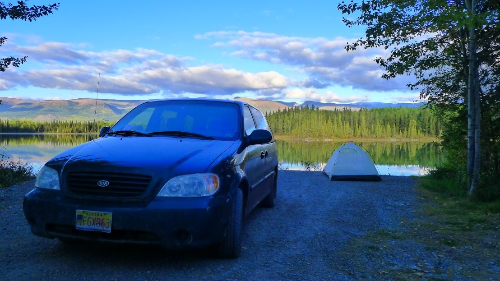
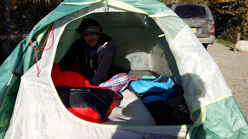
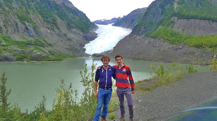
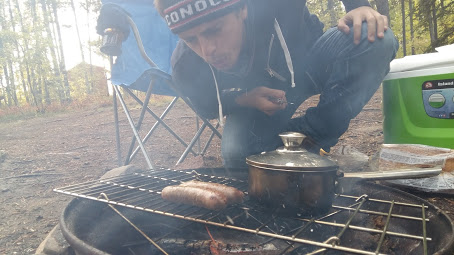
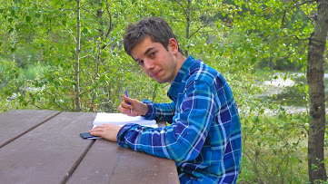
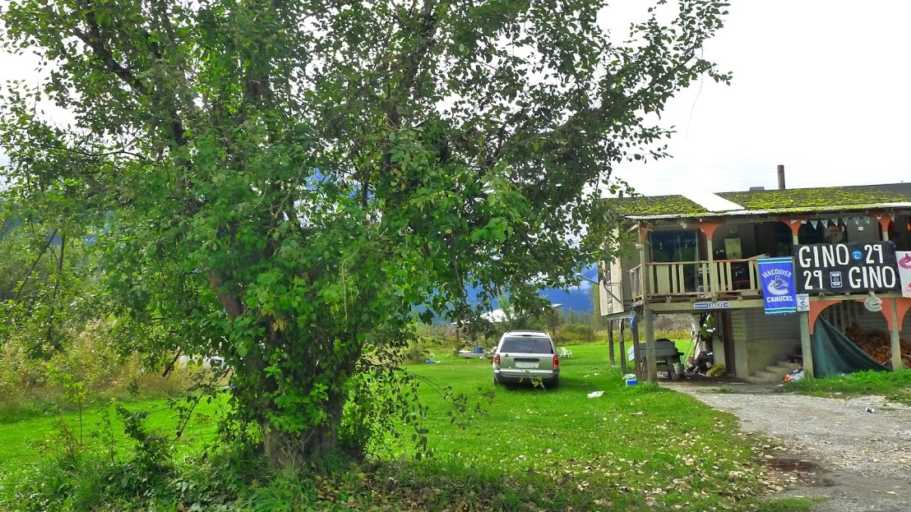

Canada, sur la route, à la roots!
On vous avait laissé à Fairbanks au Nord de l'Alaska, on vous retrouve 4200 kilomètres plus loin à Vancouver au Canada ! 4200 kilomètres. C'est la distance qui sépare Paris de Téhéran. Et au cours de ces 4200 kilomètres sur les routes canadiennes nous aurons croisé en tout et pour tout deux grandes villes sur notre route : Whitehorse et Prince George. Imaginez, deux grandes villes seulement entre Paris et Téhéran !

Photo de famille, avec notre cygne dans la voiture
Vous l'aurez compris ces deux premières semaines de voyage auront été marquées par les immensités sauvages et les paysages magnifiques de l'Alaska et du Canada. L'automne se faisant déjà sentir dans ces contrées on se régale des teintes de vert, de jaune et de rouge teintant les forêts de sapins et de bouleaux le long de la route, de la blancheur des montagnes en arrière-plan et du bleu profond des lacs et des torrents que nous croisons de temps à autre.

Kluane Lake dans le Yukon

La nature sauvage et puissante, encore plus quand le temps se couvre
La faune locale a plus animé notre trajet que les automobilistes venant en sens inverse. Écureuils, élans, renards et surtout ours croisent paisiblement notre chemin, ne semblant la plupart du temps guère dérangés par notre présence.

Un renard croise notre route en sens inverse

Une ourse et son petit perché dans l'arbre sur le bord de la route
Le soir on s'arrête dans des campings dont la beauté est à couper le souffle. En plein milieu du Yukon et de la Colombie Britannique, les routes canadiennes sont parsemées de campgrounds où des petits sites sont aménagés pour poser sa voiture, sa tente, voire son camping car et passer la nuit dans un cadre de rêve. Antoine devient rapidement un expert du Milepost, sorte de guide du routard local et nous déniche chaque nuit de superbes endroits pour poser la tente. Mes années de scoutisme se révèlent fort utiles pour la monter et la démonter rapidement, pour allumer efficacement un feu et pour préparer à manger au feu de bois. Antoine n'est pas en reste non plus, il faut croire que les heures passées à regarder Man vs Wild lui ont été utiles et très vite nous avons acquis une redoutable efficacité pour monter et lever le camp en un clin d’œil :)

Un campground en Colombie Britannique

Dur dur le camping

On pose devant le glacier
En général on fait cinq heures de voiture par jour pour se déplacer de campground en campground. Et le reste du temps ? Et bien on monte le camp, on va chercher du bois, on prépare le repas, on discute, on lit et on écrit. On scrute le feu. On apprend à prendre le temps. C'était l'un de nos engagements avant de partir et on ne l'a pas oublié :) Et surtout on profite des paysages et du calme qui nous entoure !

Antoine prépare le repas comme un chef

Grégoire en pleine séance d'écriture
Au milieu de cette vie sur la route nous avons décidé de faire étape à Vancouver pour pouvoir notamment avancer sur notre étude de l'eau douce et de ses enjeux. Nous avons ainsi pu rencontrer Adrien Gilbert, glaciologue à la SFU, l'université de Vancouver, qui étudie la fonte et la disparition probable de la calotte de Barnes. Ses recherches sont particulièrement éclairantes pour comprendre l'enjeu de la fonte des glaces ! Chaque mois on vous préparera un article + une vidéo pour aborder le sujet de l'eau dans le(s) pays que nous avons traversé(s) de façon plus complète.
Après quelques jours de repos nous reprendrons donc la route vendredi direction les parcs nationaux de Jasper et de Banff, avant de redescendre vers le Montana, prochaine grande étape de notre voyage !
Avant de vous quitter on vous laisse sur un petit jeu-concours. Il s'agit de trouver l'ours sur la photo suivante. Envoyez vos réponses à contact@aquamerica.fr. Le ou la gagnante aura le droit à une dédicace sur notre page Facebook ;)

Mais où est l'ours??
A très vite !